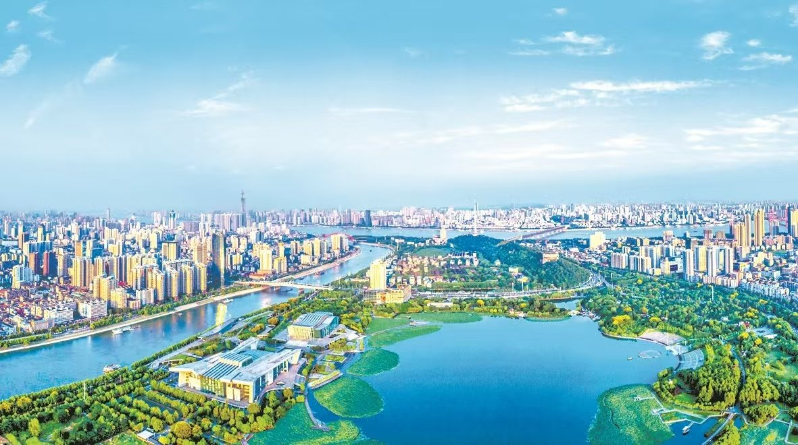
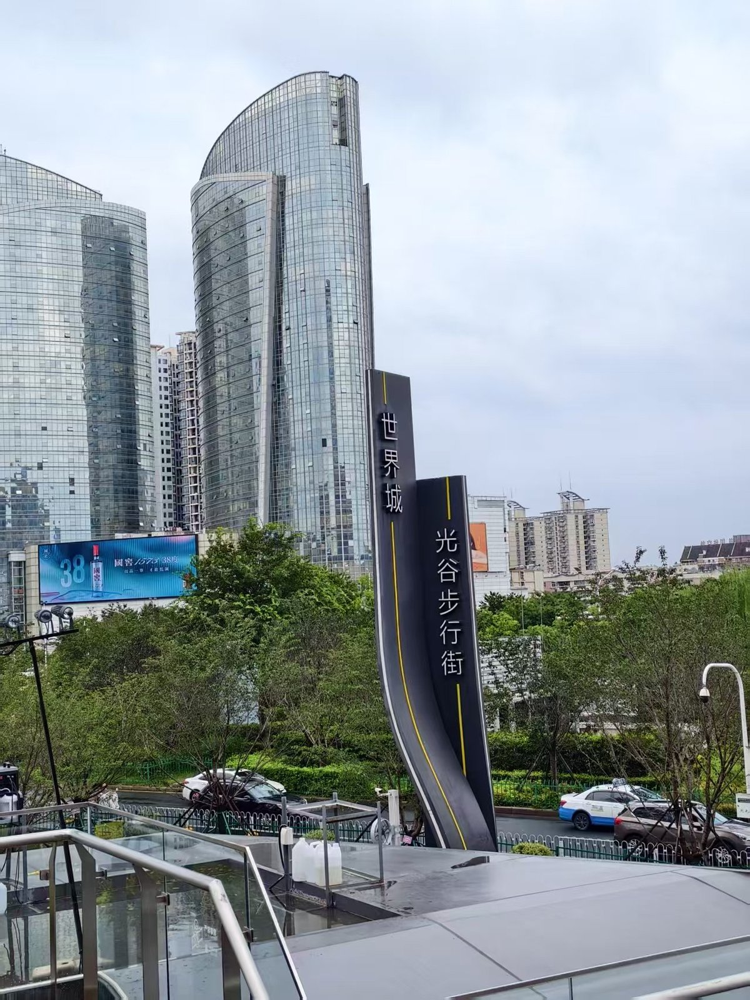
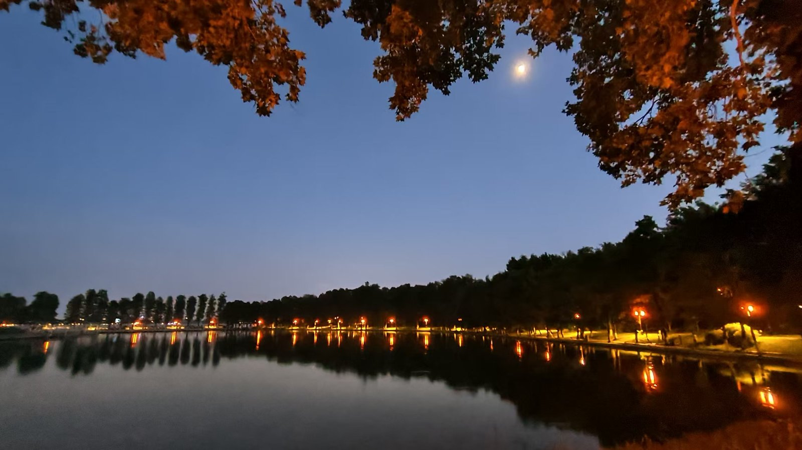
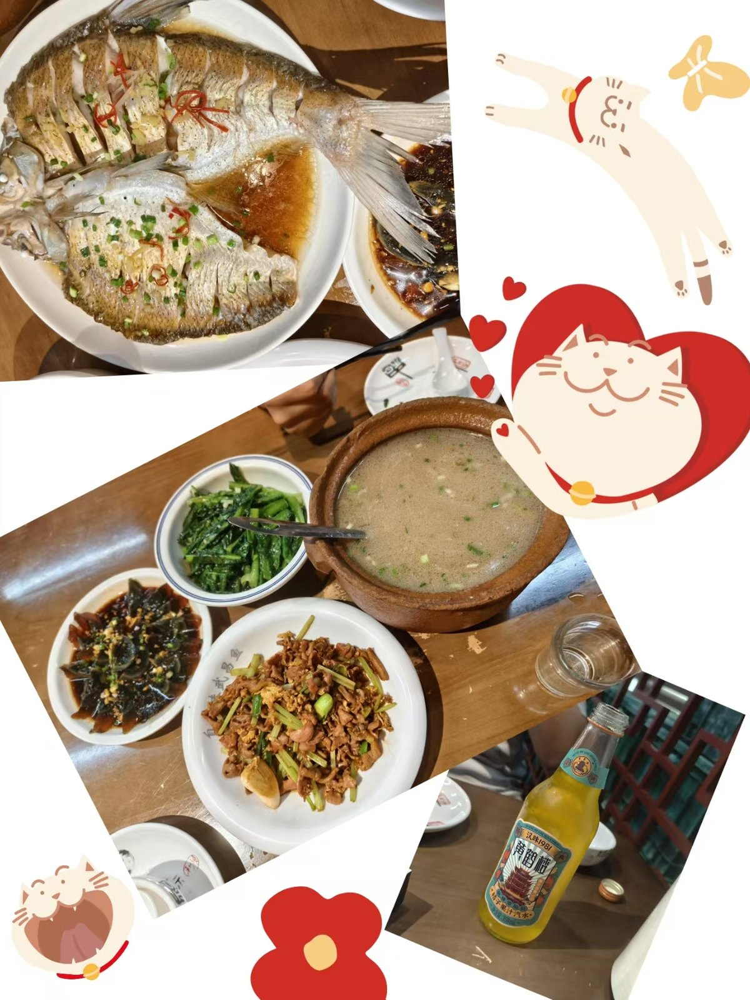

一个外地学生的第一年 · 2026
来之前我对武汉的全部想象，是课本上的黄鹤楼和一句"九省通衢"。真正提着行李箱走出车站，先感受到的是一股热气，和一个大到让我分不清方向的城市。
这一年我拍的照片不多，大多是走路时顺手按下的。回头看，它们拼起来的样子，比我当时的感受更完整。
所以有了这个站点。四个地方，一顿饭，加上一些还没去成的愿望。

从地铁口出来，抬头是一排楼。老房子和新楼挨着，走两步就换一个年代。

天黑之前到的，湖先暗下来，灯一盏一盏亮。那天风很小，水面几乎是平的。
站在楼底下才知道它有多大。照片里看着挺秀气，其实一层层压下来很有分量。

一桌子菜，有一半我叫不上名字。藕是粉的，汤是浓的，这一顿吃了很久。